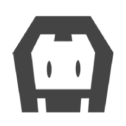
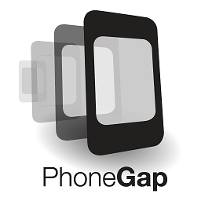

Antonio Perez - Mayo 2016
Historia
Adobe en el año 2011 compra la empresa Nitobi, ya que se vio interesada en su producto PhoneGap y el mismo, al momento de la compra, es enviado a la Fundación Apache (principal requisito de Nitobi para la venta de la empresa), para que siga siendo de código abierto. De esta forma el servicio de PhoneGap pasa a formar parte de la suite de Adobe Creative Cloud, que es lo que comercializa Adobe, y PhoneGap pasa a formar parte de la fundación Apache con el nombre de Apache Cordova y sigue siendo libre y de código abierto.
Antonio Perez - Mayo 2016
¿Que es PhoneGap?
PhoneGap es un framework de código abierto (open source), creado por la empresa Nitobi que se encargaba de desarrollar aplicaciones para dispositivos móviles, que para abaratar costos y tiempos, desarrolla un framework basado en HTML5, JavaScript y CSS3, que permitía desarrollar una aplicación compatible con todos los sistemas operativos móviles.
Antonio Perez - Mayo 2016
Caracteristicas
1- Compilado y gestión de firma, el desarrollo de aplicaciones de manera local, es decir sin usar el servicio de Adobe, implica tener múltiples SDKs instalados, y verificar que cada versión de los mismos sean las correctas, ya que PhoneGap es compatible solo con un determinado conjunto de herramientas que son provistas por cada proveedor de cada sistema operativo, que se va actualizando en cada versión; esto implica un trabajo extra cuando desarrollamos, y es uno de los puntos a favor que tiene el servicio de Adobe PhonGap Build, ya que al subir la aplicación para ser compilada, nos aseguramos que siempre se va a compilar con la última versión disponible, tanto de los SDKs como del framework.
2- Multiplataforma, al ser multiplataforma reducimos el tiempo de producción. Podemos crear aplicaciones para los distintos sistemas operativos móviles, todo con el mismo código fuente.
3- Trabajar en equipo, se puede agregar roles o permisos para trabajar en equipo de desarrollo, compartiendo el proyecto e incluso agregando mas miembros al mismo.

Antonio Perez - Mayo 2016